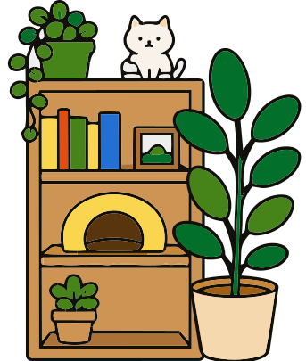
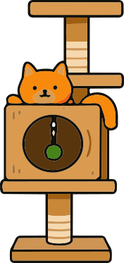
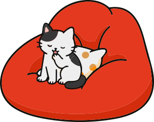
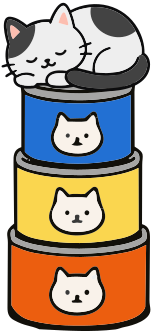
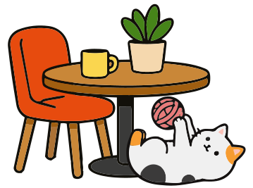
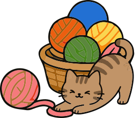

貓咪咖啡廳開幕了。每隻貓都需要剛剛好的距離，請調整牠們的位置與空間分配，讓牠們舒適地待在同一個空間。






justify-content
控制主軸上的排列方式（預設為左右方向）
flex-start靠左排列center置中排列flex-end靠右排列space-between左右貼齊，中間平均分散space-around每個 item 左右都保留空間space-evenly所有空間平均分配align-items
控制交叉軸上的對齊方式（預設為上下方向）
flex-start靠上對齊center垂直置中flex-end靠下對齊stretch自動延伸填滿高度baseline依文字基線對齊